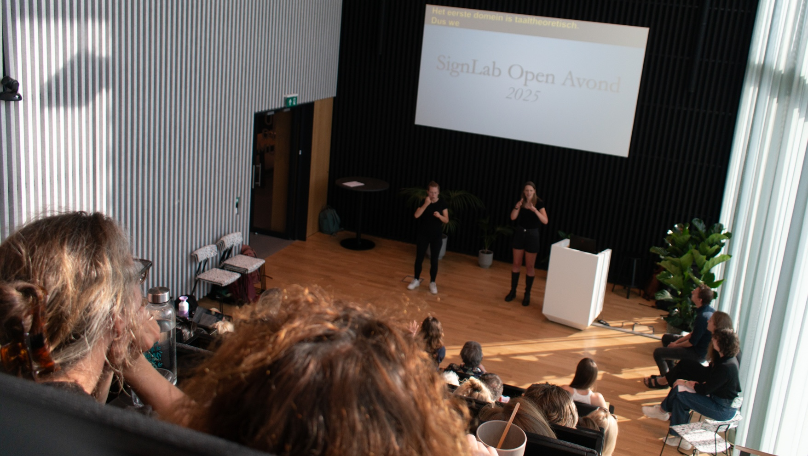

Outreach events
Signio Celebration Event, September 2026
Over the past few years, SignLab has collaborated with TYD and AURIS to develop a mobile app for learning NGT. The Signio app is now fully operational and can be downloaded from the

FEAST 2026
Formal and Experimental Advances in Sign Language Theory (FEAST) is an international conference that brings together researchers from around the world to discuss the latest developments in sign language research. The 2026 edition of FEAST was hosted by SignLab Amsterdam, and featured a diverse range of presentations and discussions on topics such as sign language acquisition, phonology, syntax, and sociolinguistics. This year, FEAST also included a special session on reference tracking and referential use of space. The conference was a great success, with around 80 participants from various countries attending and sharing their research findings. We are grateful to all the speakers, attendees, and organizers who made this event possible. View the conference website here.
Taal (Language) on Tour 2025
Radboud University is collaborating with Stichting Nieuw in Nederland on Taal on Tour, an educational program that introduces newcomer children to the field of linguistics. Newcomer children — those from refugee, asylum-seeking, or labor migrant families — often have limited proficiency in Dutch, which can lead to learning gaps and fewer opportunities to engage with science compared to their peers.
Taal on Tour aims to bridge this gap and to help children gain more enjoyment and confidence in language by offering science lessons specifically designed for newcomer children aged 9 to 14 at various locations across the country. The lessons are taught by researchers from different areas within linguistics. Within this project, Jos Ritmeester from SignLab teaches classes on sign language linguistics, in which students explore whether all signs in sign language are iconic.

Research Days September 2025
SignLab Amsterdam organized two research days in September. One research day was on a Tuesday (the 9th), and took place at our office in the Bushuis building. The other research day was on a Saturday (the 13th), and took place at the deaf meeting centre in Amsterdam. During these days, participants took part in two linguistic studies. We had lunch and coffee together during the day. We thank all the participants that took part in the research days, your help is very valuable to us!
SignLab Open Evening 2025
On June 19th, 2025, SignLab Amsterdam hosted the third edition of the SignLab Open Evening at Science Park. Presentations were held in Dutch Sign Language and in International Sign, and were held by researchers from SignLab as well as by invited international researchers. We thank everyone that attended for their interest, and look forward to the next edition!

FODOK Family Day 2025
On June 14, the FODOK (Federation for Parents of Deaf Children) Family Day took place with the theme “A world of possibilities.” During this day, parents and children could take part in various fun, informative, and inspiring activities. The SignLab was also present to introduce children and their families to our sign language avatar. Children could have live conversations with the avatar, who also read a beautiful story in Dutch Sign Language. Our goal was to promote sign language in a fun and interactive way and to demonstrate ways to improve accessibility for deaf and hard-of-hearing.
Research Day May 2025
On Tuesday, May 13, 2025, SignLab Amsterdam organized a research day. Participants came to Amsterdam to participate in two linguistic studies. We had lunch and coffee together during the day. It was a pleasant day and a very valuable contribution to our research!
Reading and Storytelling competition 2025
The 27th edition of the National Reading and Storytelling Competition took place on Saturday, April 5th, at TivoliVredenburg in Utrecht. Students from deaf schools across the Netherlands showcased their storytelling skills in Dutch Sign Language during the grand finale. The finalists competed on the main stage for the title of Best Storyteller of 2025. SignLab Amsterdam participated, using a sign language avatar that signed a fairy tale. Afterwards, SignLab also hosted an activity where students could converse in real time with the sign language avatar. Attendees were very excited to meet and talk to our avatar.
SignLab Open Evening 2024
On April 19th, 2024, SignLab Amsterdam hosted the second edition of the SignLab Open Evening at the University Library. Multiple researchers presented in Dutch Sign Language about their ongoing research projects. The evening was a big success, more than 80 people came to learn about the work that we do at SignLab Amsterdam.